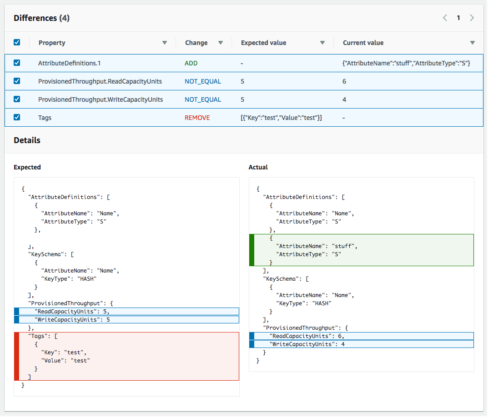

本文為英文版的機器翻譯版本，如內容有任何歧義或不一致之處，概以英文版為準。
偵測整個 CloudFormation 堆疊上的漂移
在堆疊上執行漂移偵測操作會判斷堆疊是否已漂移其預期範本組態，然後針對堆疊中每個支援漂移偵測的資源，傳回其漂移狀態的詳細資訊。
使用偵測整個堆疊上的漂移 AWS Management Console
請在以下位置開啟 AWS CloudFormation 主控台。
https://console.aws.amazon.com/cloudformation -
從堆疊清單中選取要執行漂移偵測的堆疊。在 stack details (堆疊詳細資訊) 窗格中，選擇 Stack actions (堆疊動作)，然後選擇 Detect drift (偵測偏移)。

CloudFormation 顯示資訊列，說明已針對所選堆疊啟動漂移偵測。
-
等待漂移檢測操作 CloudFormation 完成。漂移偵測操作完成後，會 CloudFormation 更新堆疊的漂移狀態和上次漂移檢查時間。這些欄位會列在堆疊詳細資訊頁面之 Stack info (堆疊資訊) 窗格的 Overview (概觀) 區段。
漂移偵測操作可能需要幾分鐘的時間，這取決於堆疊包含的資源數量。您只能同時在指定堆疊上執行單一漂移偵測作業。 CloudFormation 即使關閉資訊列，仍可繼續執行漂移偵測操作。
-
檢閱堆疊及其資源的漂移偵測結果。在選取堆疊的情況下，從 Stack actions (堆疊動作) 選單中選取 View drift results (檢視偏移結果)。
CloudFormation 列出堆疊的整體漂移狀態，以及上次在堆疊或其任何個別資源上啟動漂移偵測的時間。如果堆疊的一個或多個資源已偏離，堆疊就視為已偏離。

在 [資源漂移狀態] 區段中， CloudFormation 列出每個堆疊資源、其漂移狀態，以及上次在資源上啟動漂移偵測的時間。每個資源會顯示邏輯 ID 和實體 ID，以協助您識別它們。此外，對於狀態為「已修改」的資源， CloudFormation 會顯示資源漂移詳細資料。
您可以根據資源的偏移狀態，使用 Drift status (偏離狀態) 欄排序資源。
-
檢視已修改過的資源的詳細資訊。
-
在選取已修改資源的情況下，選取 View drift details (檢視偏離詳細資訊)。
CloudFormation 顯示該資源的漂移詳細資訊頁面。此頁面會顯示資源的預期和目前屬性值，以及兩者間的任何差異。
若要強調差異，請在 Differences (差異) 區段選取屬性名稱。
-
Details (詳細資訊) 區段的 Current (目前) 欄位會以綠色反白顯示新增的屬性。
-
Details (詳細資訊) 區段的 Expected (預期) 欄位會以紅色反白顯示刪除的屬性。
-
值已變更的屬性在 Expected (預期) 和 Current (目前) 欄中以黃色醒目提示。
-
-
 -
使用偵測整個堆疊上的漂移 AWS CLI
若要使用偵測整個堆疊上的漂移 AWS CLI，請使用下列aws
cloudformation指令：
-
detect-stack-drift：在堆疊上啟動漂移偵測操作。 -
describe-stack-drift-detection-status：監控堆疊漂移偵測操作的狀態。 -
describe-stack-resource-drifts：檢閱堆疊漂移偵測操作的詳細資訊。
-
使用
detect-stack-drift在整個堆疊上偵測偏離。指定堆疊名稱或 ARN。您也可以指定任何特定資源的邏輯 ID，作為此漂移偵測操作的篩選條件。$aws cloudformation detect-stack-drift --stack-namemy-stack-with-resource-drift{ "StackDriftDetectionId": "624af370-311a-11e8-b6b7-500cexample" } -
由於堆疊漂移偵測操作可能會長時間執行，請使用
describe-stack-drift-detection-status監控漂移操作的狀態。此命令接受detect-stack-drift命令傳回的堆疊漂移偵測 ID。在以下範例中，我們接受上述
detect-stack-drift範例所傳回的堆疊漂移偵測 ID，並當作參數傳遞到describe-stack-drift-detection-status。此參數傳回操作詳細資訊，其中指出漂移偵測操作已完成、單一堆疊資源已漂移，也因此整個堆疊視為已漂移。$aws cloudformation describe-stack-drift-detection-status --stack-drift-detection-id624af370-311a-11e8-b6b7-500cexample{ "StackId": "arn:aws:cloudformation:us-east-1:099908667365:stack/my-stack-with-resource-drift/489e5570-df85-11e7-a7d9-50example", "StackDriftDetectionId": "624af370-311a-11e8-b6b7-500cexample", "StackDriftStatus": "DRIFTED", "Timestamp": "2018-03-26T17:23:22.279Z", "DetectionStatus": "DETECTION_COMPLETE", "DriftedStackResourceCount": 1 } -
當堆疊漂移偵測操作完成後，請使用
describe-stack-resource-drifts命令來檢視結果，包括已漂移的資源的實際和預期屬性值。以下範例使用
stack-resource-drift-status-filters參數，以請求已修改或已刪除的資源的堆疊偏離資訊。該請求傳回已修改的一項資源的相關資訊，包括值已變更的兩個屬性的詳細資訊。未刪除任何資源。$aws cloudformation describe-stack-resource-drifts --stack-namemy-stack-with-resource-drift--stack-resource-drift-status-filters MODIFIED DELETED{ "StackResourceDrifts": [ { "StackId": "arn:aws:cloudformation:us-east-1:099908667365:stack/my-stack-with-resource-drift/489e5570-df85-11e7-a7d9-50example", "ActualProperties": "{\"ReceiveMessageWaitTimeSeconds\":0,\"DelaySeconds\":120,\"RedrivePolicy\":{\"deadLetterTargetArn\":\"arn:aws:sqs:us-east-1:099908667365:my-stack-with-resource-drift-DLQ-1BCY7HHD5QIM3\",\"maxReceiveCount\":12},\"MessageRetentionPeriod\":345600,\"MaximumMessageSize\":262144,\"VisibilityTimeout\":60,\"QueueName\":\"my-stack-with-resource-drift-Queue-494PBHCO76H4\"}", "ResourceType": "AWS::SQS::Queue", "Timestamp": "2018-03-26T17:23:34.489Z", "PhysicalResourceId": "https://sqs.us-east-1.amazonaws.com/099908667365/my-stack-with-resource-drift-Queue-494PBHCO76H4", "StackResourceDriftStatus": "MODIFIED", "ExpectedProperties": "{\"ReceiveMessageWaitTimeSeconds\":0,\"DelaySeconds\":20,\"RedrivePolicy\":{\"deadLetterTargetArn\":\"arn:aws:sqs:us-east-1:099908667365:my-stack-with-resource-drift-DLQ-1BCY7HHD5QIM3\",\"maxReceiveCount\":10},\"MessageRetentionPeriod\":345600,\"MaximumMessageSize\":262144,\"VisibilityTimeout\":60,\"QueueName\":\"my-stack-with-resource-drift-Queue-494PBHCO76H4\"}", "PropertyDifferences": [ { "PropertyPath": "/DelaySeconds", "ActualValue": "120", "ExpectedValue": "20", "DifferenceType": "NOT_EQUAL" }, { "PropertyPath": "/RedrivePolicy/maxReceiveCount", "ActualValue": "12", "ExpectedValue": "10", "DifferenceType": "NOT_EQUAL" } ], "LogicalResourceId": "Queue" } ] }